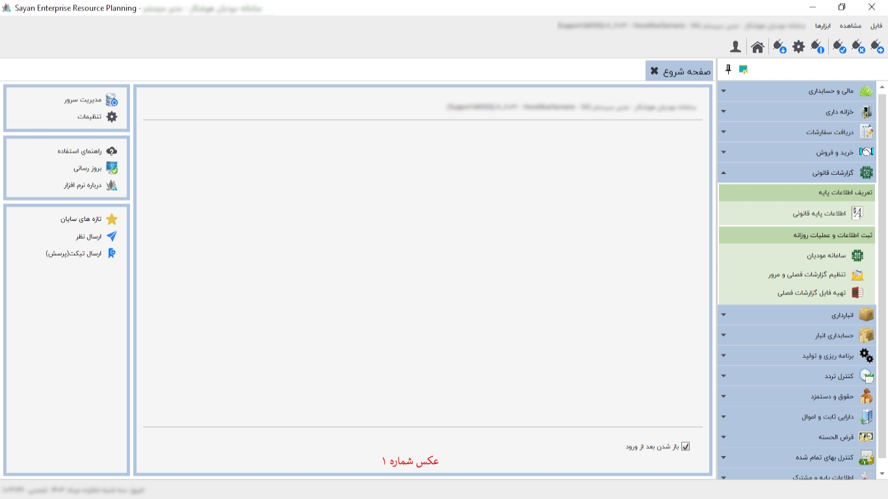
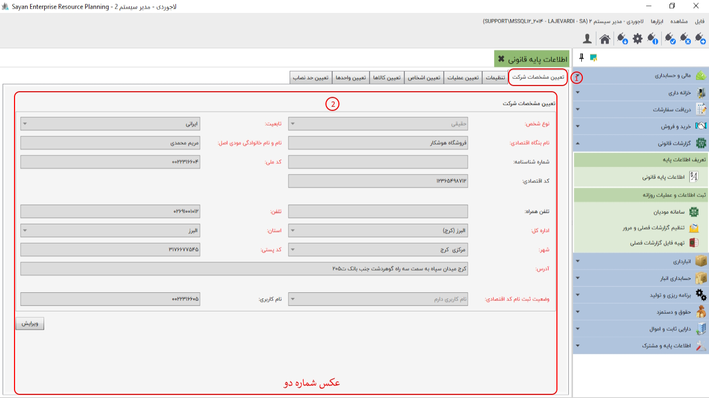
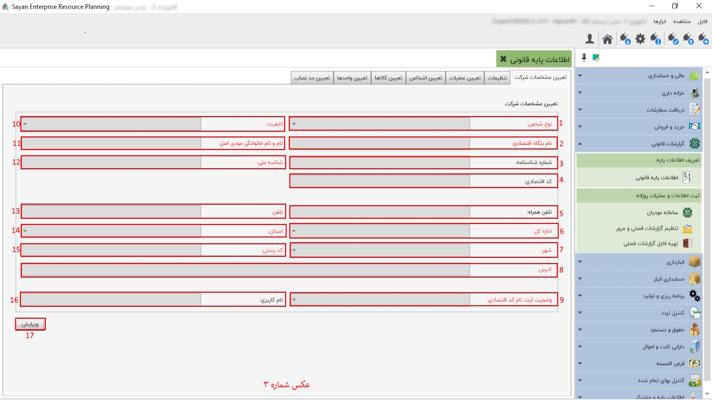

گزارشات قانونی سایان شامل قسمت سامانه مودیان و قسمت گزارشات فصلی می باشد که این گزارشات قانونی نیاز به تنظیمات دارد در قسمت اطلاعات پایه قانونی این تنظیمات که شامل تعیین مشخصات شرکت،تعیین اشخاص،و.... جهت اعمال تغییرات با توجه به توضیحات بعدی در اختیار شما قرار داده شده است.
برای ادامه مطلب به عکس شماره دو مراجعه نمایید.
تعیین مشخصات شرکت (کادر شماره یک ):در این بخش میتوانید اطلاعات مربوط به مجموعه تان را وارد نمایید
کادر شماره دو:با انتخاب گزینه ویرایش میتوانید اقدام به پر کردن و اصلاح اطلاعات خواسته شده نمایید در این قسمت اطلاعاتی که نام آن ها به رنگ قرمز مشخص شده الزامی هستند و اطلاعاتی که با رنگ مشکی مشخص شده غیر الزامی می باشد.
برای ادامه مطلب به عکس شماره سه مراجعه نمایید.
